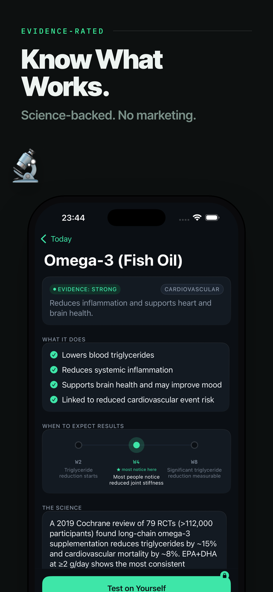
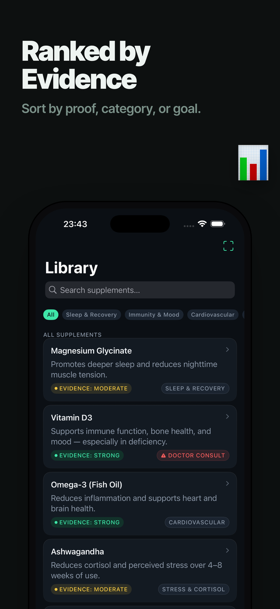
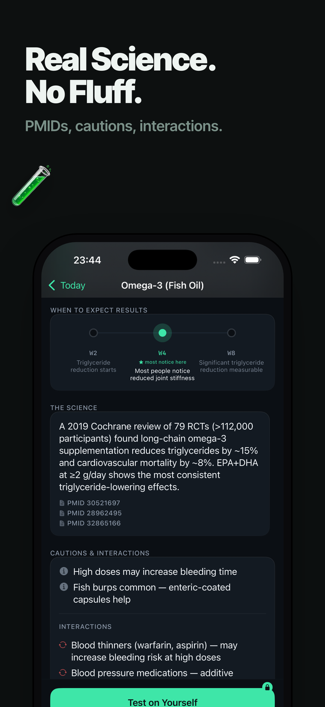
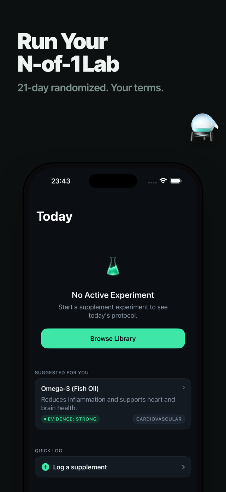
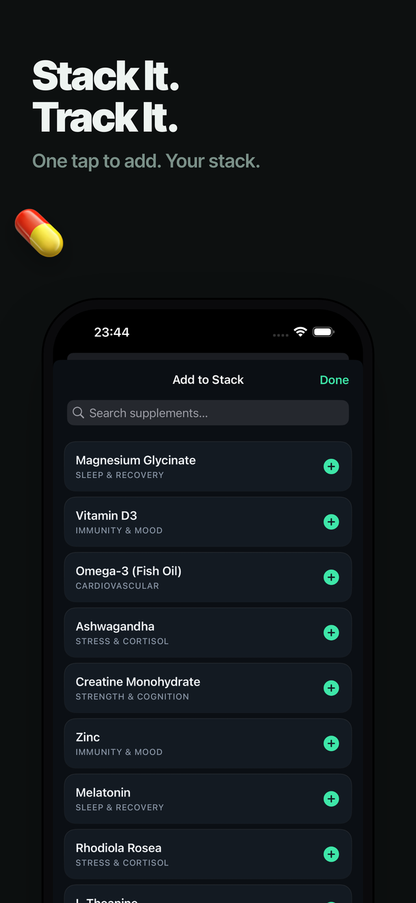
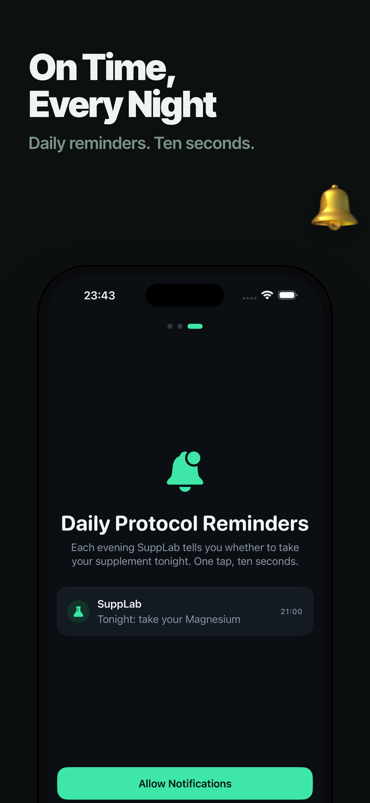

Evidence-based supplement experiments
Find out if your supplements actually work — on you. Randomized personal (N-of-1) experiments turn your own sleep, HRV, and energy into plain-language proof.
Why SuppLab
A randomized N-of-1 protocol quietly tells you which evenings to take it and which to skip — the method used in real clinical trials.
A plain-language verdict: “Magnesium improves your deep sleep by 12%,” or “no measurable effect — that’s money you could save.”
Curated supplements with honest evidence grades, expected-onset timelines, and clear “consult your doctor” cautions.
Connect Apple Health and SuppLab measures sleep and HRV for you. No Health data? A 10-second daily check-in works too.
Point your camera at a supplement label. On-device text recognition matches the ingredients to the library — no typing.
No account, no servers. Your data — and any Apple Health data it reads — stays on your iPhone and is never uploaded.
Screenshots






Made for the curious
You spend real money on supplements every month, but one question stays unanswered: does this actually work for me?
SuppLab answers it the honest way — a randomized experiment on you, measured against your own baseline, ending in a verdict you can trust and share.
Privacy
SuppLab has no backend and no accounts. Everything you enter, and any Apple Health data you allow it to read, stays on your device — nothing is uploaded, and HealthKit data is never used for advertising. Full details are in our Privacy Policy.
Support
No. SuppLab is an educational self-experimentation tool. It is not a medical device and does not diagnose or treat any condition. Always consult a qualified healthcare professional before starting, stopping, or changing a supplement or medication.
No — it’s optional. Connect Apple Health and SuppLab measures sleep and HRV automatically. If you prefer not to, a 10-second daily check-in captures energy, focus, and mood instead.
You pick a supplement to test. SuppLab builds a randomized take/skip schedule and, each evening, tells you what to do. When it’s done, it compares your take-days to your skip-days and gives you a personal verdict.
Completely. There are no accounts and no servers. Your data stays on your iPhone, is never uploaded, and can be deleted anytime from Settings.
SuppLab is for educational purposes only and is not a substitute for professional medical advice, diagnosis, or treatment. It is not a regulated medical device.